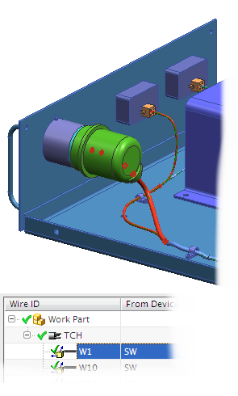

In the following activities, you will import the connection list and then assign the components and route the wires. To do this you will:
Import a connection list into the wiring harness subassembly.
Use the list to automatically assign as many components as possible, then manually assign the rest.
Review status reports for connections and components.

Launch the Create assignments and wire routings activity.
For additional information, see the following:
Use the Command Finder to search for Auto Assign and Manual Assign.